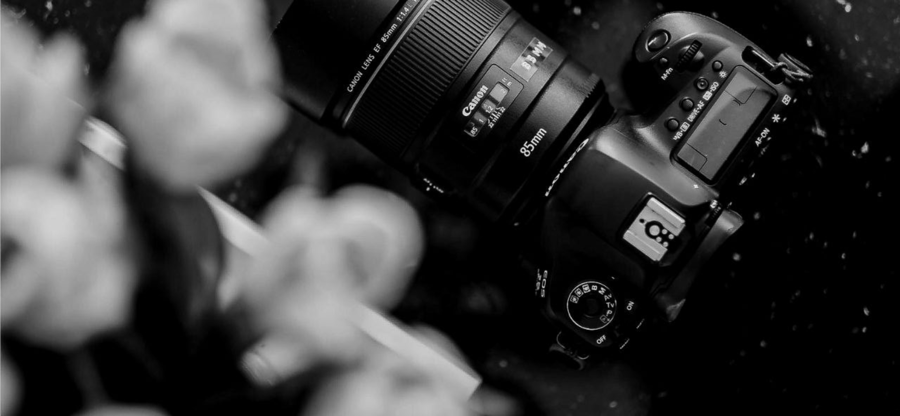

EQUIPMENT DETAILS
Canon EOS 1500D / Canon Rebel T7
- IMAGE QUALITY: The camera features a 24.1-megapixel APS-C CMOS sensor, which captures high-resolution images with excellent detail and clarity. It also offers a wide ISO range of 100-6400 (expandable to 12800), allowing for good performance in various lighting conditions.
- LENSE COMPATIBILITY: The Canon 1500D uses the Canon EF/EF-S lens mount, providing a wide range of lens options to suit different photography styles and subjects. Such as variety of lenses, including wide-angle, telephoto, macro, and more, to enhance your creative possibilities.
- SHOOTING PERFORMACE: This camera offers a continuous shooting speed of up to 3 frames per second, allowing you to capture fast-moving subjects with ease. It also supports Full HD 1080p video recording at 30 frames per second, enabling you to capture high-quality videos as well.
- USER-FRIENDLY FEATURES: The Canon 1500D includes a 3.0-inch LCD screen for easy menu navigation and image review. It has built-in Wi-Fi and NFC connectivity, enabling you to transfer images wirelessly to compatible devices or remotely control the camera using a smartphone.
- CREATIVE MODES AND FILTERS: The camera provides various creative shooting modes, such as Portrait, Landscape, Sports, and more, to help you achieve the desired look for your photographs. Additionally, it offers creative filters like Toy Camera, Miniature Effect, and Fish-eye Effect to add unique artistic touches to your images.
